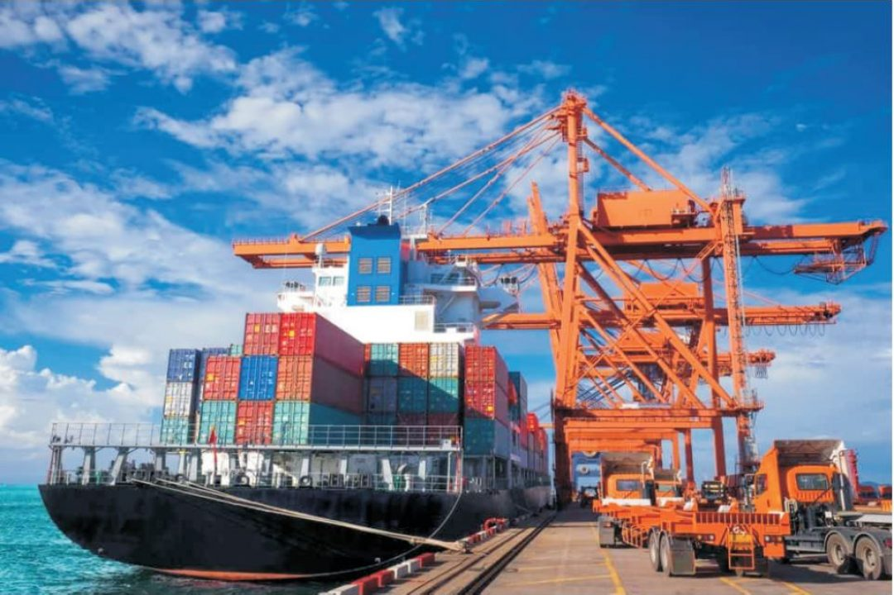

Transport Maritime
Le transport maritime joue un rôle essentiel dans la logistique des grandes infrastructures et dans le développement économique régional. Chez DANDJIN DREDGING DEPTH & CONSTRUCTION LTD, nous avons su nous imposer comme un acteur clé du secteur grâce à notre expertise, notre flotte adaptée et notre engagement pour la qualité de service.
Nos services couvrent l’ensemble de la chaîne de transport, de l’affrètement de barges au déchargement portuaire, en passant par le transport sécurisé de matériaux lourds, de sable, de gravats et d’équipements industriels. Nous opérons aussi bien dans les zones portuaires que sur les rivières et canaux, en tenant compte des contraintes environnementales et opérationnelles propres à chaque chantier.
Notre approche repose sur une logistique bien pensée, des processus rigoureux, et une équipe hautement qualifiée, régulièrement formée aux dernières normes en matière de sécurité maritime. Nous investissons dans des solutions modernes pour garantir la traçabilité des cargaisons, le respect des délais et la fiabilité des opérations.
DANDJIN s'engage également à offrir des prestations conformes aux exigences réglementaires et environnementales. Nos opérations visent à limiter l’empreinte écologique tout en assurant la performance logistique, un équilibre crucial pour les projets de développement durable.
Que ce soit pour la construction d’infrastructures côtières, l’approvisionnement de chantiers éloignés, ou la mise en place de solutions de transport spécifiques, nous sommes en mesure de concevoir et de mettre en œuvre des solutions sur mesure qui répondent parfaitement aux besoins de nos clients.
